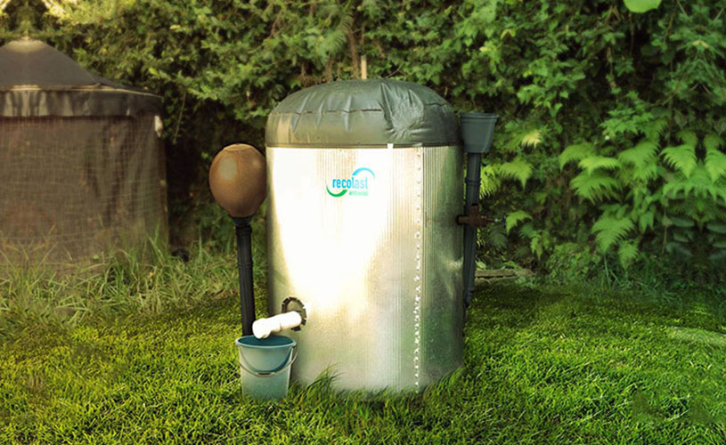
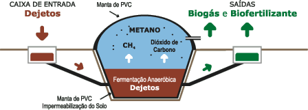
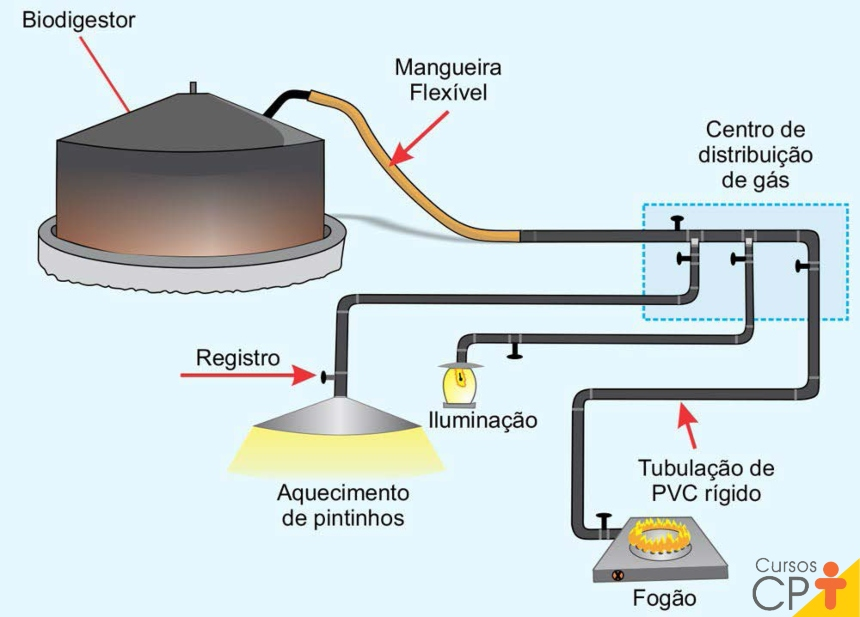
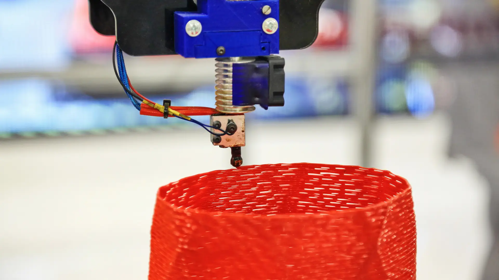
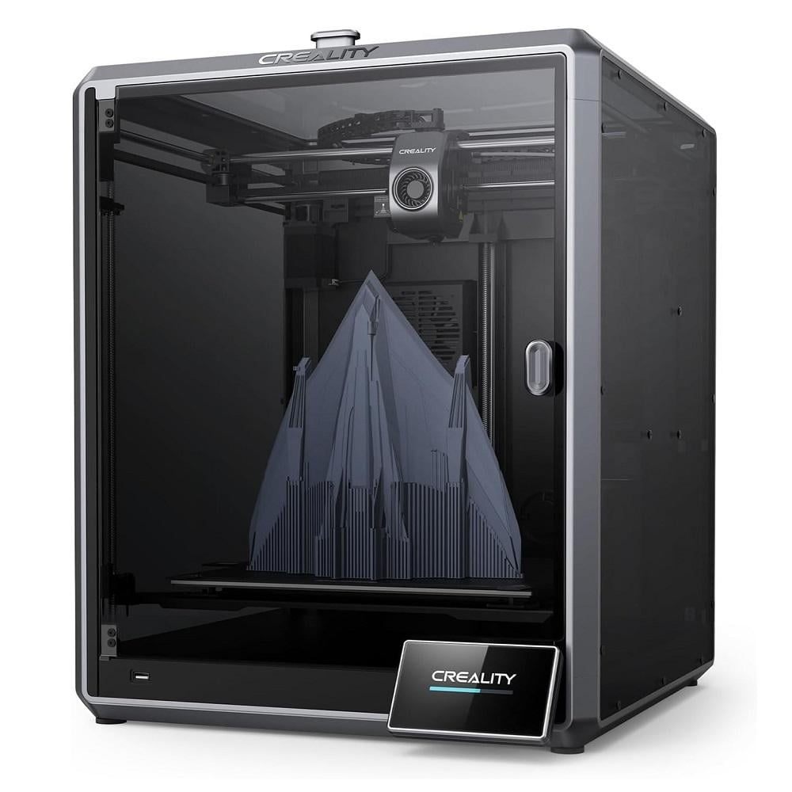

SESI: do lixo para o laboratório
Contextualização e Visão Geral
As escolas geram diariamente resíduos orgânicos e plásticos.
Com base em uma pesquisa realizada junto a funcionários da escola, foi identificado que os principais materiais descartados são restos de comida da cantina e copos plásticos.
O projeto SESI: do lixo para o laboratório busca transformar esse desafio em oportunidade:
- O lixo orgânico da cantina vira biogás e adubo.
- Os copos plásticos descartados passam a ser reutilizados em impressoras 3D.
Eixo 1: Biodigestor Escolar (Resíduos Orgânicos)
Materiais Reutilizáveis
- Sobras de comida da cantina (restos de almoço, cascas de frutas e legumes).
- Caixas d’água ou tambores plásticos (500–1000L sem uso).
- Tubos e conexões de PVC (restos de obras).
Materiais Recomendados Comprar
- Válvula de segurança → libera excesso de pressão.
- Manômetro → monitora a pressão interna.
- Queimador de gás → adapta o biogás para uso direto na cozinha da escola.
Benefícios
- Econômico: redução nos gastos com gás de cozinha e adubo químico.
- Ambiental: menos lixo orgânico enviado a aterros e menor emissão de metano.
- Educacional: aulas práticas de ciências, química e sustentabilidade.
Previsão
Tempo: 4 a 6 semanas para construção e instalação.
Custo estimado: R$ 800 a R$ 2.000.
Esse valor se refere principalmente à compra dos itens de segurança (válvula e manômetro) e do queimador de gás.
Os tambores e tubos podem ser reutilizados, reduzindo o custo total.



Eixo 2: Laboratório 3D Circular (Plástico)
Materiais Reutilizáveis
- Copos plásticos descartados na cantina e em eventos escolares.
Operação
- O corte dos copos será feito manualmente, sem necessidade de máquinas adicionais.
- O material cortado será utilizado diretamente na impressora 3D já disponível na escola.
- No futuro, poderá ser oferecido um curso de impressora 3D com direito a certificado.
Benefícios
- Econômico: não será necessário comprar materiais para impressão 3D, pois os copos substituem os insumos comerciais.
- Educacional: contato direto com tecnologia de ponta e aprendizado sobre reaproveitamento de recursos.
- Funcional: a escola poderá produzir peças de reparo, móveis e objetos personalizados.
Previsão
Tempo: 1 a 2 semanas para organização do laboratório.
Custo estimado: R$ 5.000 a R$ 15.000.
Esse valor corresponde ao investimento em impressoras 3D e equipamentos básicos de uso.
Como a escola já possui impressora, o custo real se restringe a manutenção e insumos simples.


Impactos Esperados
- Redução significativa do lixo orgânico enviado a aterros.
- Produção de biogás suficiente para parte da cozinha da escola.
- Economia com gás de cozinha e materiais de impressão 3D.
- Ao invés de descartar copos plásticos, a escola passa a reutilizá-los como matéria-prima para impressão.
Expansão do Projeto
Este projeto pretende ser um modelo replicável.
Queremos mostrar a outras escolas que é possível:
- Reutilizar copos plásticos em impressoras 3D.
- Transformar restos de comida em energia limpa para a cozinha.
- Integrar educação e sustentabilidade em um sistema prático e acessível.
Aluno: Matheus dos Santos Neves